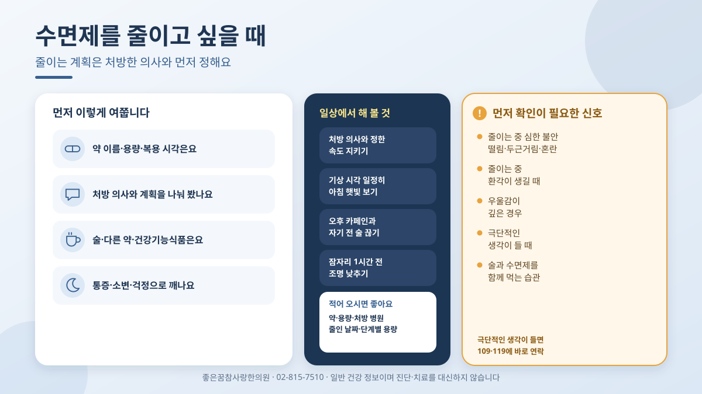

이종호 한의사 감수좋은꿈참사랑한의원 대표원장 (한의사 면허번호 19769)발행 2026-11-26 · 수정 2026-11-26
이 글의 차례
밤 열한 시, 양치를 마치고 식탁 위 약 봉투 앞에 섭니다. 몇 년째 이 시간이면 하는 일인데 오늘은 손이 잠깐 멈춥니다. '이 약, 언제까지 먹어야 하지.'
반으로 쪼개 볼까 하다가, 그러다 밤을 꼬박 새우면 내일은 어쩌나 싶어 결국 한 알을 그대로 삼킵니다. 그러고는 불을 끄고 누워서도 한참 그 생각을 합니다.
진료실에서 수면제 이야기를 꺼내실 때면 목소리가 조금 작아지곤 합니다. 약 없이도 자고 싶다는 마음, 이러다 평생 먹게 되는 건 아닐까 하는 걱정, 약에 기대는 게 어쩐지 부끄럽다는 마음이 한꺼번에 묻어납니다.
약을 먹어서라도 잠을 붙들어야 했던 시간이 있었을 겁니다. 그 시간을 버텨 오신 것도, 이제 줄여 보고 싶다는 마음이 든 것도 모두 내 몸을 아끼려는 마음입니다. 부끄러워하실 일이 아닙니다.
먼저 답부터 드리겠습니다. 수면제는 스스로 판단해 갑자기 끊거나 줄이지 마세요. 줄이는 속도와 방법은 처방한 의사와 함께 정하고, 정한 순서에 따라 단계적으로 줄여 가는 것이 안전합니다.
한의원은 그 과정에서 잠을 흔드는 다른 이유와 몸 상태를 함께 살피는 자리입니다. 한의원 진료가 수면제를 대신하지는 않습니다. 드시는 약을 모두 확인한 뒤, 생활 속에서 잠을 받쳐 줄 고리들을 같이 찾아봅니다.
왜 갑자기 끊으면 안 될까요
오래 드신 약일수록 몸은 그 약이 있는 상태에 맞춰져 있습니다. 하루아침에 약이 빠지면 몸은 미처 준비하지 못한 채 밤을 맞습니다. 그래서 끊는다는 결심보다 줄이는 속도가 더 조심스럽습니다.
- 갑자기 끊으면 잠이 약을 먹기 전보다 더 나빠지는 반동성 불면이 올 수 있습니다.
- 불안, 두근거림, 손 떨림, 식은땀 같은 금단 증상이 생길 수 있고, 드물게는 혼란이나 경련처럼 심한 증상이 오기도 합니다.
- 항우울제를 갑자기 끊으면 어지럼, 예민함, 잠의 흔들림 같은 중단 증상이 생기거나 원래의 불편이 다시 올라올 수 있습니다.
- 늦은 카페인, 들쭉날쭉한 기상, 통증이나 밤의 소변처럼 잠을 깨우는 다른 이유가 그대로라면 줄이는 길이 더 험해집니다.
예전에 혼자 줄여 보다가 힘들었던 기억이 있는 분은 그 기억 때문에 잠자리에서 더 긴장하기도 합니다. '오늘도 못 자면 어쩌지' 하는 마음이 다시 잠을 밀어내는 것이지요. 줄이는 일에는 몸과 마음 양쪽의 준비가 다 필요합니다.
줄이는 길은 처방한 의사와 함께 걷습니다
줄이고 싶다는 마음이 드셨다면 다음 진료 때 처방한 의사에게 그 마음을 그대로 말씀하세요. 왜 줄이고 싶은지, 예전에 줄여 본 적이 있는지, 함께 드시는 약과 술은 어떤지 알려 드리면 계획을 세우기가 수월해집니다.
계획이 정해지면 한 단계씩 내려갑니다. 한 단계를 내려간 뒤 며칠 잠이 얕아지는 일은 드물지 않습니다. 그럴 때 스스로 다시 늘리거나 더 줄이지 마시고, 기록을 들고 처방한 의사와 다음 걸음을 상의하세요.
지금은 줄이지 않고 지켜보자는 판단이 나올 수도 있습니다. 우울감이나 불안 치료를 같이 받고 계시다면 더 그렇습니다. 그것은 실패가 아니라 지금 몸에 맞는 속도를 고른 것입니다.
저는 재활을 이야기할 때 의지와 욕심이 너무 앞서면 그때 문제가 생기기 쉽다고 말씀드리곤 합니다. 약을 줄이는 일도 닮은 데가 있습니다. 한 번에 해내려 하지 말고, 처방한 의사와 정한 속도대로 천천히 가시면 됩니다.
진료실에서는 환자분과 환자분의 맥, 그리고 제가 셋이서 이야기한다고 말씀드리곤 합니다. 수면제를 줄이는 길에는 여기에 한 분이 더 계십니다. 약을 처방한 선생님입니다. 그분과 정한 길 위에서, 저는 곁에서 잠의 리듬과 몸 상태를 살피겠습니다.
자주 하는 오해, 조금 풀어 드릴게요
"하루 이틀 건너뛰어 보면 끊을 수 있는지 알 수 있지 않을까요?" 그렇게 시험해 보시는 분이 꽤 많습니다. 그런데 임의로 건너뛴 밤에 반동성 불면이나 불안이 오면, 그 하룻밤이 '역시 나는 약 없이는 안 되는구나' 하는 기억으로 남기 쉽습니다.
처방한 의사와 정한 방법을 따르는 쪽이 몸에도 마음에도 안전합니다. 시험해 보는 일도 혼자가 아니라 계획 안에서 의사와 같이 하시면 됩니다.
"한약이나 침으로 바꾸면 수면제는 바로 끊어도 되죠?" 그렇지 않습니다. 한의원 진료는 수면제를 대신하지 않습니다. 줄이는 일정은 처방한 의사가 정하고, 한의원에서는 그 기간의 잠과 몸 상태를 함께 살핍니다.
"줄이다가 잠이 흔들리면 실패한 거죠?" 단계마다 며칠 잠이 얕아지는 것은 드물지 않습니다. 실패라기보다 몸이 새 단계에 적응하는 시간에 가깝습니다. 적어 두셨다가 의사와 상의하시면 됩니다.
"수면제 먹는다고 하면 이상하게 보지 않을까요?" 필요해서 처방받은 약입니다. 진료 때 숨기지 말고 그대로 알려 주세요. 약을 알아야 겹치지 않게, 안전하게 살필 수 있습니다.
이런 경우가 많습니다
특정한 누구의 이야기가 아니라, 수면제를 줄이고 싶어 오시는 분들에게서 자주 겹쳐 보이는 모습입니다.
예를 들어 업무 스트레스로 몇 년째 수면제를 드셔 온 직장인이라면, 줄이는 계획은 처방한 의사와 먼저 상의하시도록 권합니다. 그동안 저는 늦은 커피와, 퇴근 뒤에도 긴장이 풀리지 않는 저녁 시간을 들여다봅니다.
예를 들어 밤에 소변 때문에 두세 번 깨는 어르신이 수면제를 줄이고 싶다면, 깨는 이유인 밤의 소변과 저녁에 드시는 물의 양부터 여쭙습니다. 약 기운이 남은 채 어두운 길을 걸으면 휘청하기 쉬워, 화장실 가는 길에 작은 수면등을 켜 두시라고도 말씀드립니다.
예를 들어 출산 뒤 아이를 돌보느라 잠이 자꾸 끊겨 약을 처방받은 분이라면, 수유 여부와 처방한 의사의 계획을 먼저 확인합니다. 그리고 낮에 잠깐이라도 눈을 붙일 틈을 같이 찾아봅니다.
먼저 이렇게 여쭙니다
- 약 이름과 용량, 복용 기간과 복용 시각은 어떻게 되나요?
- 처방한 의사와 줄이는 계획을 이야기해 본 적이 있나요?
- 예전에 줄여 본 적이 있다면 그때 무엇이 힘들었나요?
- 술이나 다른 약, 약국에서 사 드시는 수면유도제, 건강기능식품을 함께 드시나요?
- 잠을 깨우는 통증, 소변, 걱정 같은 이유가 있나요?
그리고 하나를 더 여쭙니다. 왜 줄이고 싶으신지입니다. 아침에 머리가 무거워서인지, 오래 먹는 게 걱정돼서인지, 가족이 걱정해서인지에 따라 처방한 의사에게 전할 말도, 생활에서 먼저 손볼 것도 달라집니다.
스스로 점검해 보세요
- 수면제를 한 달 넘게 거의 매일 먹고 있다
- 처방한 의사와 줄이는 계획을 아직 이야기해 보지 않았다
- 약을 거른 날 잠을 거의 못 자거나 불안해진 적이 있다
- 오후에 커피를 마시거나 자기 전 술을 마시는 날이 있다
- 밤에 통증, 소변, 걱정 때문에 깨는 일이 잦다
- 기상 시각이 날마다 들쭉날쭉하다
- 아침에 약 기운이 남아 머리가 멍하거나 낮에 졸린 날이 많다
해당하는 항목은 진료 때 말씀해 주시고, 약과 관련된 항목은 처방한 의사에게도 꼭 알려 주세요.
일상에서 먼저 해 볼 수 있는 것
약을 줄이는 속도는 의사와 정하지만, 잠을 받쳐 줄 생활은 오늘부터 손볼 수 있습니다. 약이 한 단계씩 내려가는 동안 생활이 곁에서 잠을 받쳐 주면 그 단계를 지나기가 조금 수월해질 수 있습니다.
- 줄이는 계획은 처방한 의사와 먼저 정하고, 정해진 속도 지키기
- 기상 시각을 매일 일정하게 하고, 아침 햇빛 아래서 몇 분 걷기
- 오후 카페인은 줄이고, 자기 전 술은 피하기
- 저녁에 20~30분 천천히 걷고, 잠들기 1~2시간 전 따뜻한 물에 몸 담그기
- 잠자리 한 시간 전부터 조명을 낮추고 매일 같은 순서로 잠자리 준비하기
- 밤에 화장실 가는 길에는 작은 수면등 켜 두기
매일 같은 순서로 잠자리를 준비하라는 데에는 까닭이 있습니다. 씻고, 불을 낮추고, 같은 자리에 눕는 순서가 되풀이되면 몸이 그 순서만으로도 잘 때가 되었음을 알아차리기 시작합니다. 약에만 맡겨 두던 신호를 생활도 함께 보내 주는 셈입니다.
목욕은 수면제를 드시기 전에 마치시고, 너무 뜨거운 물은 피하세요. 약 기운이 도는 몸으로 욕실에 들어가면 휘청하기 쉽습니다. 어지러우면 바로 나와 쉬셔야 합니다.
술은 특히 조심하셔야 합니다. 술과 수면제를 함께 드시면 몸이 지나치게 처지고 숨이 약해질 수 있습니다. 잠이 안 온다고 약에 술을 더하는 일은 없으셔야 합니다.
한꺼번에 다 바꾸려 하지 마시고, 한두 가지를 골라 2주쯤 이어 가 보세요. 저는 큰 목표를 드리기보다 해낼 수 있는 만큼을 함께 정하는 편입니다. 하루 어긋났다고 처음으로 돌아가는 것이 아닙니다. 그다음 날부터 이어 가시면 됩니다.
잠이 오지 않는 밤과 그다음 날
한 단계를 내려간 첫 며칠은 잠자리에서 시계를 자꾸 보게 됩니다. 시계를 볼수록 남은 시간을 셈하게 되고, 셈할수록 잠은 멀어집니다. 머리맡의 시계와 휴대폰은 보이지 않게 돌려 두세요.
20분 넘게 잠이 오지 않으면 잠자리에서 나와 어둑한 곳에 앉아 계시다가, 졸음이 오면 다시 누우세요. 편안하게 들이쉬고 조금 길게 내쉬는 호흡을 몇 분 해 보셔도 좋습니다. 어지러우면 바로 멈추시면 됩니다.
그런 밤에도 술은 찾지 마세요. 약을 한 알 더 드시는 것도 처방받을 때 따로 들은 안내가 없다면 하지 않으셔야 합니다. 정한 양을 바꾸는 일은 다음 날 처방한 의사와 상의할 일입니다.
다음 날 아침에는 못 잔 만큼 늦게 일어나고 싶어집니다. 그래도 일어나는 시각은 지키시고, 낮잠은 짧게 이른 오후 안에 끝내고, 커피는 오후 이른 시간까지만 드세요. 그날 밤의 졸음을 아껴 두는 일입니다.
한의원에서 함께 살필 수 있는 경우
- 약을 줄이는 기간에 잠들기까지 오래 뒤척이는 경우 몸의 긴장과 호흡의 리듬을 살핍니다.
- 새벽에 자주 깨고 다시 잠들기 어려운 경우 소화와 체온, 밤의 소변처럼 깨는 이유를 찾아봅니다.
- 낮에 불안하고 예민해진 경우 하루의 긴장이 쌓이는 시간과 쉬는 습관을 같이 정리합니다.
- 통증 때문에 잠을 설치는 경우 아픈 곳과 잠을 함께 살핍니다.
첫 방문에는 먼저 약 봉투나 약 이름 목록으로 드시는 약을 모두 확인합니다. 잠드는 시각과 깨는 이유, 처방한 의사와 정한 계획이 있는지도 여쭙습니다.
그다음 양손의 맥을 짚습니다. 모든 분께 하는 일이고, 잠이 흔들리는 분일수록 몸이 얼마나 지쳐 있는지 가늠하는 데 쓰입니다. 필요하다고 판단되면 혀도 살피고, 통증이 잠을 깨운다면 아픈 부위를 따로 확인합니다.
수면 기록과 생활 기록을 나란히 놓고 잠을 흔드는 요인을 정리한 뒤 방향을 설명드립니다. 침이나 한약 상담을 말씀드릴 수 있고, 한약을 상담할 때는 지금 드시는 약과 함께 드셔도 되는지 먼저 확인합니다.
다시 오시면 지난번 이후의 잠과 낮의 컨디션부터 이어서 여쭙습니다. 저는 우리 한의원을 '잘 쉬다 가는 곳'이라고 말해 왔습니다. 잠이 흔들리는 시기일수록 머무시는 동안만이라도 편히 쉬다 가셨으면 합니다.
얼마나 지켜보고, 언제 상담하면 좋을까요
처방한 의사와 정한 단계마다 1~2주는 잠든 시각, 깬 횟수, 낮의 컨디션을 매일 적어 보세요. 한 단계를 내려간 뒤 잠이 흔들리는 기간이 길어지면, 스스로 용량을 바꾸지 말고 처방한 의사에게 먼저 알리세요.
심한 떨림이나 혼란, 환각, 경련 같은 증상은 기록하며 지켜볼 일이 아닙니다. 기다리지 말고 가까운 응급실로 가셔야 합니다. 불안이나 두근거림이 부쩍 심해질 때도 혼자 버티지 마시고 처방한 의사에게 바로 알리세요.
이렇게 기록해 오시면 상담이 쉬워집니다
- 약 이름·용량·복용 시각과 처방한 병원
- 줄이기 시작한 날짜와 단계별 용량
- 매일 잠든 시각과 깬 횟수, 아침의 개운함과 낮의 컨디션
- 불안·두근거림 같은 불편이 생긴 날과 정도
- 커피, 술, 낮잠, 저녁 걷기와 목욕을 한 날
이 기록은 저만 보는 것이 아닙니다. 처방한 의사에게도 같은 종이를 보여 드리세요. 두 진료실이 같은 기록을 보고 있으면 이야기가 어긋날 일이 줄어듭니다.
이런 증상은 먼저 확인이 필요합니다
- 약을 줄이는 중 심한 불안, 떨림, 두근거림, 혼란, 환각, 경련이 생기는 경우
- 우울감이 깊어지거나 스스로를 해칠 생각이 드는 경우
- 스스로를 해칠 생각이 들면 ☎ 109로 바로 연락하세요.
이런 신호가 있으면 한의원보다 가까운 병원이나 응급실을 먼저 찾으세요.
마치며
약을 줄이는 길은 한 번에 내려가는 계단보다 천천히 내려오는 비탈에 가깝습니다. 중간에 쉬어 가는 날도, 잠시 멈춰 서는 날도 있습니다. 그래도 괜찮습니다.
진맥을 하다 보면 몸이 그 사람을 기다려 주고 있다는 생각이 들 때가 있습니다. 약에 기대어서라도 잠을 붙들어 온 그 시간 동안에도, 몸은 그분을 기다려 주고 있었을 겁니다. 서두르지 않으셔도 됩니다.
다음에 진료실에서 뵈면, 저는 처방한 선생님과 어디까지 이야기가 되었는지, 그리고 지난 한 주 잠은 어떠셨는지부터 여쭙겠습니다. 그 이야기를 들으며 다시 양손의 맥을 짚겠습니다.
함께 읽으면 좋은 글

여쭙는 것
- 약 이름과 용량, 복용 기간과 복용 시각은 어떻게 되나요?
- 처방한 의사와 줄이는 계획을 이야기해 본 적이 있나요?
- 예전에 줄여 본 적이 있다면 그때 무엇이 힘들었나요?
생활에서 해 볼 것
- 줄이는 계획은 처방한 의사와 먼저 정하고, 정해진 속도 지키기
- 기상 시각을 매일 일정하게 하고, 아침 햇빛 아래서 몇 분 걷기
- 오후 카페인은 줄이고, 자기 전 술은 피하기
한의원에서 함께 살필 것
- 약을 줄이는 기간에 잠들기까지 오래 뒤척이는 경우 몸의 긴장과 호흡의 리듬을 살핍니다.
- 새벽에 자주 깨고 다시 잠들기 어려운 경우 소화와 체온, 밤의 소변처럼 깨는 이유를…
- 낮에 불안하고 예민해진 경우 하루의 긴장이 쌓이는 시간과 쉬는 습관을 같이 정리합니다.
먼저 확인이 필요한 신호
- 약을 줄이는 중 심한 불안, 떨림, 두근거림, 혼란, 환각, 경련이 생기는 경우
- 우울감이 깊어지거나 스스로를 해칠 생각이 드는 경우
- 스스로를 해칠 생각이 들면 109로 바로 연락하세요.
한눈에 보는 표
| 구분 | 핵심 |
|---|---|
| 여쭙는 것 | 약 이름과 용량, 복용 기간과 복용 시각은 어떻게 되나요? 처방한 의사와 줄이는 계획을 이야기해 본 적이 있나요? |
| 생활에서 해 볼 것 | 줄이는 계획은 처방한 의사와 먼저 정하고, 정해진 속도 지키기 기상 시각을 매일 일정하게 하고, 아침 햇빛 아래서 몇 분 걷기 |
| 한의원에서 함께 살필 것 | 약을 줄이는 기간에 잠들기까지 오래 뒤척이는 경우 몸의 긴장과 호흡의 리듬을 살핍니다. 새벽에 자주 깨고 다시 잠들기 어려운 경우 소화와 체온, 밤의 소변처럼 깨는 이유를 찾아봅니다. |
| 먼저 확인이 필요한 신호 | 약을 줄이는 중 심한 불안, 떨림, 두근거림, 혼란, 환각, 경련이 생기는 경우 우울감이 깊어지거나 스스로를 해칠 생각이 드는 경우 |
자주 묻는 질문
수면제를 갑자기 끊어도 되나요?
아니요. 갑자기 끊으면 반동성 불면이나 불안·떨림 같은 금단 증상이 올 수 있습니다. 임의로 끊지 말고 처방한 의사와 상의해 단계적으로 조절하세요.
한의원 진료로 수면제를 대신할 수 있나요?
한의원 진료는 수면제를 대신하지 않습니다. 복용 약을 모두 확인한 뒤, 줄이는 기간의 잠의 리듬과 몸 상태, 잠을 흔드는 생활 요인을 함께 살핍니다.
처음 갈 때 무엇을 가져가면 되나요?
복용 중인 약 봉투나 약 이름 목록, 처방전, 최근 1~2주의 수면 기록을 가져오시면 상담이 쉬워집니다.
줄이는 동안 잠이 더 안 오면 다시 늘려도 되나요?
스스로 용량을 바꾸지 말고 처방한 의사와 상의하세요. 줄이는 속도를 조정하는 것도 의사와 함께 정합니다. 심한 떨림이나 혼란, 경련이 생기면 가까운 응급실로 가세요.
잠이 안 올 때 술을 조금 마시고 약을 먹어도 되나요?
아니요, 함께 드시지 마세요. 술과 수면제가 겹치면 몸이 지나치게 처지고 숨이 얕아질 수 있어 위험합니다. 술을 드시는 습관이 있다면 처방한 의사에게 그대로 알려 주세요.
좋은꿈참사랑한의원은 재진 때 지난번 이야기부터 이어서 여쭙니다. 진료시간과 예약은 오시는 길에서 확인하세요.
어디서 상담받을 수 있나요?
좋은꿈참사랑한의원은 서울 동작구 만양로2길 2 신성빌딩 3층·5층(서울 동작구 상도동, 7호선 상도역 3번 출구 근처)에 있습니다. 한의사 3명(이종호 대표원장, 조영기 수석진료원장, 정원영 진료원장)이 진료합니다. 진료시간은 평일 09:30~20:00(점심 13:00~14:00), 토·일·공휴일 09:30~15:00이며, 방문 전 전화로 확인을 권합니다. 예약은 네이버 예약, 카카오톡 상담, 전화 02-815-7510로 받습니다.
이 글은 일반적인 건강 정보이며 개인의 진단이나 치료를 대신하지 않습니다. 증상이 있거나 복용 중인 약이 있다면 진료를 통해 확인하세요. 치료 효과는 개인마다 다를 수 있습니다.
작성 기준: 일반적으로 알려져 있는 건강 정보를 참고해 정리했습니다(대표원장 감수). 증상 기록은 1~2주 동안 하루 1회, 비슷한 시간에 적어 오시면 지난 상태와 비교하기 쉽습니다.